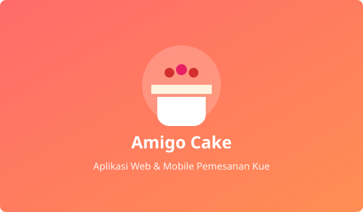
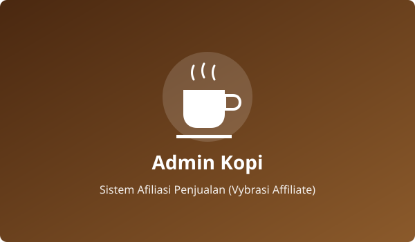
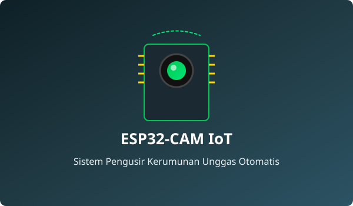

Halo, Saya Daffa Zubair Rabbani
Seorang Web & IoT Developer yang bersemangat dalam membangun aplikasi web modern, sistem mobile, dan integrasi perangkat cerdas.
Lihat Karya SayaTentang Saya

Lulusan Teknik Komputer Jaringan dari SMK Yadika 13, saya adalah mahasiswa aktif di Politeknik Negeri Jember yang berdedikasi dalam bidang teknologi informasi. Saya memiliki ketertarikan mendalam pada pengembangan perangkat lunak multi-platform (Web & Mobile) serta integrasi perangkat keras berbasis Internet of Things (IoT).
Selama praktik kerja 4 bulan di BKPSDM Kota Bekasi, saya mengasah kemampuan kolaborasi tim, ketelitian tata kelola data digital, dan komunikasi publik yang responsif. Saya adalah pribadi pembelajar cepat (*fast learner*), gigih menyelesaikan masalah, dan selalu termotivasi menciptakan solusi teknologi yang aplikatif.
Download CV SayaKeahlian
Bahasa Pemrograman
- HTML5
- CSS3
- JavaScript (ES6+)
- Java & Java FX
- C / C++ (Embedded/IoT)
Design & Prototyping
- Figma
- UI/UX Responsive Design
- Font Awesome
Tools, Database & IoT
- Git & GitHub
- VS Code
- MySQL
- ESP32-CAM & Sensor IoT
Pengalaman
BKPSDM (Badan Kepegawaian Dan Pengembangan Sumber Daya Manusia) Kota Bekasi
4 Bulan MagangPraktek Kerja Lapangan (PKL) | 2022 – 2023 (4 Bulan)
- Pelayanan Tamu & Komunikasi: Melakukan penerimaan tamu dinas dan memberikan respon informasi yang profesional serta ramah setiap harinya.
- Manajemen Surat Masuk: Memproses pencatatan, klasifikasi, dan penginputan data surat kedinasan masuk ke sistem registrasi secara teliti.
- Manajemen Surat Keluar: Bertanggung jawab atas verifikasi data, pencatatan nomor agenda, dan distribusi surat kedinasan keluar.
- Pengolahan Data Digital: Mengelola rekapitulasi data administrasi kepegawaian ke dalam Microsoft Excel secara akurat dan tepat waktu.
Edukasi
Teknik Informatika
Politeknik Negeri Jember | 2024 - Sekarang
Fokus studi pada rekayasa perangkat lunak, algoritma, pemrograman multi-paradigma, dan sistem basis data. Berpengalaman dalam kolaborasi proyek tim untuk pembuatan aplikasi berbasis web, mobile, dan sistem pintar.
Teknik Komputer dan Jaringan
SMK Yadika 13 | 2021 - 2024
Mempelajari arsitektur jaringan komputer (LAN/WAN), perakitan & *troubleshooting* PC, konfigurasi sistem operasi server, dan logika dasar pemrograman.
Portofolio
Kombinasi proyek nyata yang mencakup pengembangan web, aplikasi mobile, dan integrasi perangkat cerdas (IoT).

Web & MobileAmigo Cake
Aplikasi pemesanan kue digital terintegrasi lintas platform (Web & Mobile). Mempermudah konsumen menjelajahi katalog varian kue, melakukan pemesanan langsung, dan memantau status pesanan secara efisien.

Web ApplicationAdmin Kopi (Vybrasi Affiliate)
Dashboard manajemen program afiliasi penjualan produk kopi. Dilengkapi pelacakan performa referral mitra, pencatatan transaksi masuk, kalkulasi komisi otomatis, dan analitik penjualan berbasis web.

IoT & HardwarePengusir Kerumunan Unggas Otomatis
Sistem cerdas berbasis mikrokontroler ESP32-CAM untuk mendeteksi kerumunan unggas/hama secara visual pada area pertanian atau fasilitas, lalu memicu aktuator pengusir frekuensi suara dan gerak secara otomatis.
 Desktop & RFID
Desktop & RFID
Sistem Parkir Berbasis RFID
Aplikasi otomatisasi pos parkir menggunakan pemindai RFID (Radio-Frequency Identification). Mempercepat verifikasi kartu kendaraan, pembukaan gerbang otomatis, dan kalkulasi biaya parkir.
 Web Application
Web Application
Sistem Perjalanan Dinas (RAB & LPJ)
Aplikasi berbasis web untuk memudahkan siklus administrasi perjalanan dinas: mulai dari pengajuan izin, persetujuan atasan, pengelolaan anggaran (RAB), hingga pelaporan keuangan (LPJ).
Kontak
Tertarik untuk berkolaborasi dalam proyek web, mobile, atau IoT? Jangan ragu untuk menghubungi saya melalui kontak di bawah ini atau kirimkan pesan langsung!